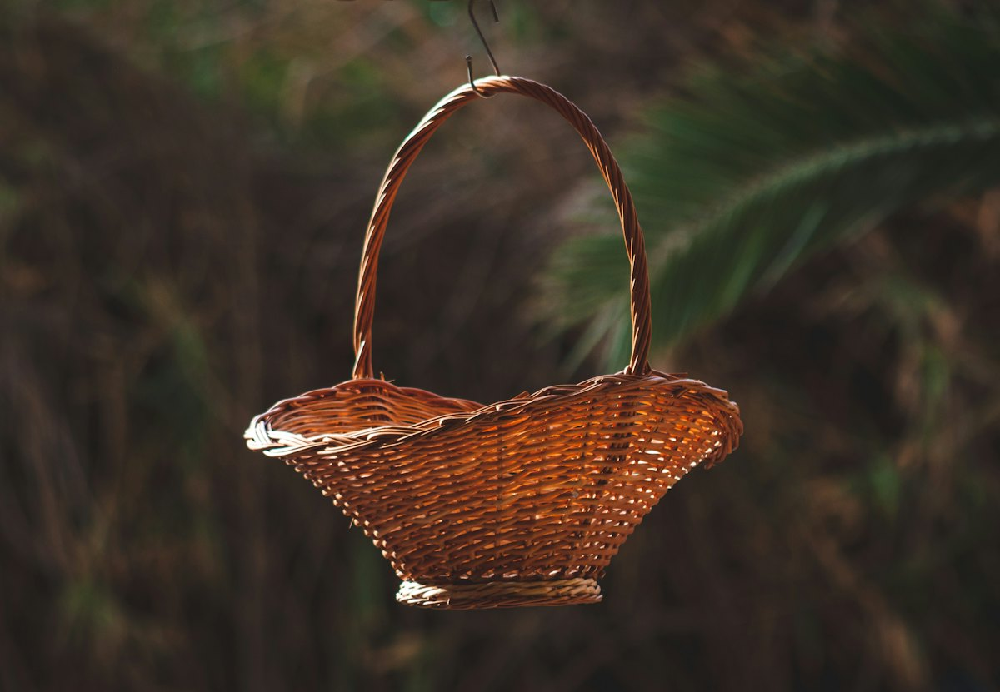
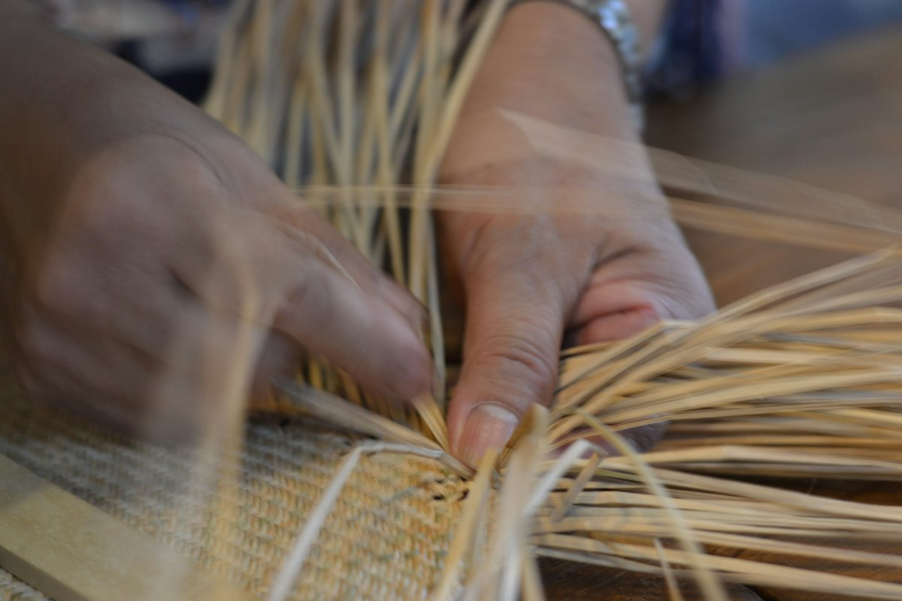
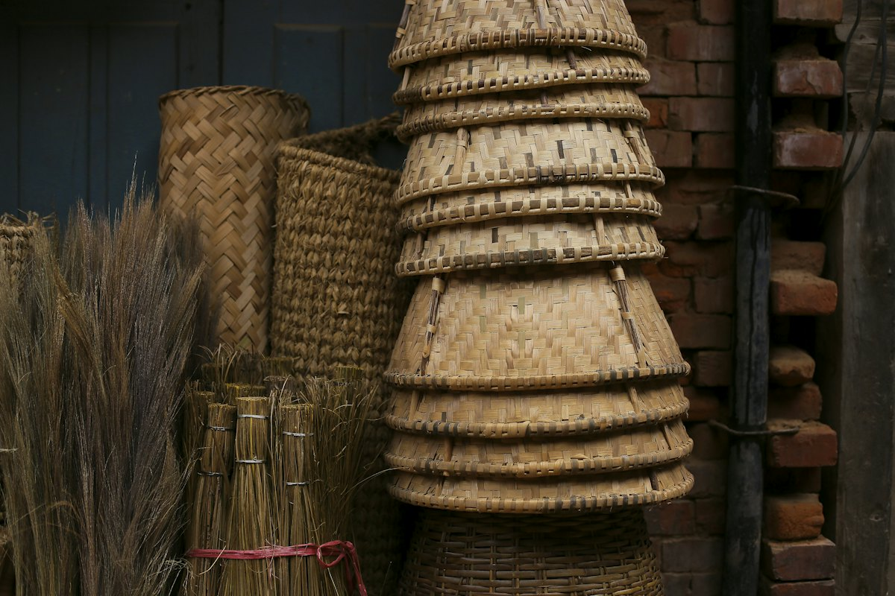

竹のバッグ
竹で編んだ、かごのバッグ。
竹細工・一閑張り 大分県別府市
別府の友成産業が営む「竹のかおり」。竹のバッグや木製プレート、カトラリーなどを販売しています。
別府竹細工の編み方
網代編み
細い竹ひごを、斜めに交差させて編む。かごやバッグに。
ドラッグすると、回して眺められます。
3Dのイメージです。実際の商品とは異なります
令和5年9月27日、一閑張りの工房を開設しました。お気軽にお立ち寄りください。
竹バッグや木製プレート、カトラリーなどの小売販売は、月曜日から金曜日の9時30分から16時まで行っています。

竹で編んだ、かごのバッグ。

竹ひごを編み上げる、別府の竹細工。

毎日の食卓に、木と竹のぬくもりを。
…
| 小売販売 | 月曜日〜金曜日 9:30〜16:00 |
|---|---|
| 休業日 | 土曜・日曜・祝祭日（休業日カレンダーをご確認ください） |
商品やWebカタログについては、お電話かメールでお問い合わせください。